СП 363.1325800.2017 «Покрытия светопрозрачные и фонари зданий и сооружений. Прав»
О документе: разработчики, утверждение, регистрация, ключевые слова
СВОД ПРАВИЛ СП 363.1325800.2017
Издание официальное
Москва 2017
1 ИСПОЛНИТЕЛЬ - Акционерное общество «Центральный научноисследовательский и проектно-экспериментальный институт промышленных зданий и сооружений» (АО «ЦНИИпромзданий»)
- 2 ВНЕСЕН Техническим комитетом по стандартизации ТК 465 «Строительство»
- 3 ПОДГОТОВЛЕН к утверждению Департаментом градостроительной деятельности и архитектуры Министерства строительства и жилищнокоммунального хозяйства Российской Федерации (Минстрой России)
- 4 УТВЕРЖДЕН приказом Министерства строительства и жилищнокоммунального хозяйства Российской Федерации от 22 декабря 2017 г. № 1704/пр и введен в действие с 23 июня 2018 г.
- 5 ЗАРЕГИСТРИРОВАН Федеральным агентством по техническому регулированию и метрологии (Росстандарт)
- 6 ВВЕДЕН ВПЕРВЫЕ
В случае пересмотра (замены) или отмены настоящего свода правил соответствующее уведомление будет опубликовано в установленном порядке. Соответствующая информация, уведомление и тексты размещаются также в информационной системе общего пользования - на официальном сайте разработчика (Минстрой России) в сети Интернет
© Минстрой России, 2017
Настоящий нормативный документ не может быть полностью или частично воспроизведен, тиражирован и распространен в качестве официального издания на территории Российской Федерации без разрешения Минстроя России
Дата введения 2018-06-23
УДК ОКС 91.160.20; 91.080.99
Ключевые слова: светопрозрачное покрытие, фонари, мембрана, стекло, стеклопакеты, полимерные панели
ИСПОЛНИТЕЛЬ АО «НИЦ»Строительство»
Наименование организации
Генеральный директор А.В.Кузьмин
СОИСПОЛНИТЕЛЬ АО «ЦНИИПромзданий»
Наименование организации
Генеральный директор В.В.Гранев
Зам. генерального директора Д.К.Лейкина
Ответственный исполнитель Г.В.Океанов
Введение
Настоящий свод правил разработан в соответствии с требованиями федеральных законов от 27 декабря 2002 г. № 184-ФЗ «О техническом регулировании», от 29 июня 2015 г. № 162-ФЗ «О стандартизации в Российской Федерации», от 30 декабря 2009 г. № 384-ФЗ «Технический регламент о безопасности зданий и сооружений», от 22 июля 2008 г. № 123ФЗ «Технический регламент о требованиях пожарной безопасности», от 23 ноября 2009 г. № 261-ФЗ «Об энергосбережении и о повышении энергетической эффективности и о внесении изменений в отдельные законодательные акты Российской Федерации».
Настоящий свод правил разработан в развитие СП 17.13330.2011 «СНиП II-26-76 Кровли».
Настоящий свод правил разработан авторским коллективом АО «ЦНИИпромзданий» (руководитель разработки - канд. архитектуры Д.К. Лейкина , ответственный исполнитель Г.В. Океанов , канд. техн. наук А.В. Мороз , В.А. Козлов , канд. техн. наук Т.Е. Стороженко ).
1Область применения
2Нормативные ссылки
В настоящем своде правил использованы нормативные ссылки на следующие документы:
ГОСТ 12.3.005-75 Система стандартов безопасности труда. Работы окрасочные. Общие требования безопасности
ГОСТ 12.3.016-87 Система стандартов безопасности труда. Строительство. Работы антикоррозионные. Требования безопасности
ГОСТ 111-2014 Стекло листовое бесцветное. Технические условия
ГОСТ 13015-2012 Изделия бетонные и железобетонные для строительства. Общие технические требования. Правила приемки, маркировки, транспортирования и хранения
ГОСТ 19177-81 Прокладки резиновые пористые уплотняющие. Технические условия
ГОСТ 22233-2001 Профили прессованные из алюминиевых сплавов для светопрозрачных ограждающих конструкций. Технические условия
Translucent coating and lights of buildings and structures. Desing rules
ГОСТ 23118-2012 Конструкции стальные строительные. Общие технические условия
ГОСТ 24866-2014 Стеклопакеты клееные. Технические условия
ГОСТ 25621-83 Материалы и изделия полимерные строительные герметизирующие и уплотняющие. Классификация и общие технические требования
ГОСТ 26602.1-99 Блоки оконные и дверные. Методы определения сопротивления теплопередаче
ГОСТ 26602.2-99 Блоки оконные и дверные. Методы определения воздухо- и водопроницаемости
ГОСТ 26602.3-2016 Блоки оконные и дверные. Метод определения звукоизоляции
ГОСТ 27751-2014 Надежность строительных конструкций и оснований. Основные положения
ГОСТ 30244-94 Материалы строительные. Методы испытаний на горючесть
ГОСТ 30402-96 Материалы строительные. Метод испытания на воспламеняемость
ГОСТ 30698-2014 Стекло закаленное. Технические условия
ГОСТ 30733-2014 Стекло с низкоэмиссионным твердым покрытием. Технические условия
ГОСТ 30778-2001 Прокладки уплотняющие из эластомерных материалов для оконных и дверных блоков. Технические условия
ГОСТ 30826-2014 Стекло многослойное строительного назначения. Технические условия
ГОСТ 31364-2014 Стекло с низкоэмиссионным мягким покрытием.
Технические условия
ГОСТ 31937-2011 Здания и сооружения. Правила обследования и мониторинга технического состояния
ГОСТ 32997-2014 Стекло листовое окрашенное в массе. Общие технические условия
ГОСТ 33017-2014 Стекло с солнцезащитным или декоративным твердым покрытием. Технические условия
ГОСТ 33086-2014 Стекло с солнцезащитным или декоративным мягким покрытием. Технические условия
ГОСТ 33087-2014 Стекло термоупрочненное. Технические условия
ГОСТ EN 410-2014 Стекло и изделия из него. Методы определения оптических характеристик. Определение световых и солнечных характеристик
ГОСТ Р 51032-97 Материалы строительные. Метод испытания на распространение пламени
ГОСТ Р 53301-2013 Клапаны противопожарные вентиляционных систем. Метод испытания на огнестойкость
- ГОСТ Р 56712-2015 Панели многослойные из поликарбоната. Технические условия
- СП 2.13130.2012 Системы противопожарной защиты. Обеспечение огнестойкости объектов защиты»
- СП 4.13130.2013 Системы противопожарной защиты. Ограничение распространения пожара на объектах защиты. Требования к объемнопланировочным и конструктивным решениям
- СП 7.13130.2013 Отопление, вентиляция и кондиционирование. Требования пожарной безопасности
- СП 16.13330.2011 «СНиП II-23-81* Стальные конструкции»
- СП 17.13330.2011 «СНиП II-26-76 Кровли»
- СП 20.13330.2016 «СНиП 2.01.07-85* Нагрузки и воздействия»
- СП 28.13330.2012 «СНиП 2.03.11-85 Защита строительных конструкций от коррозии»
- СП 48.13330.2011 «СНиП 12-01-2004 Организация строительства» (с изменением № 1)
- СП 50.13330.2012 «СНиП 23-02-2003 Тепловая защита зданий»
- СП 51.13330.2011 «СНиП 23-03-2003 Защита от шума» (с изменением № 1)
- СП 52.13330.2016 «СНиП 23-05-95* Естественное и искусственное освещение»
- СП 54.13330.2016 «СНиП 31-01-2003 Здания жилые многоквартирные»
- СП 60.13330.2016 «СНиП 41-01-2003 Отопление, вентиляция и кондиционирование воздуха»
- СП 63.13330.2012 «СНиП 52-01-2003 Бетонные и железобетонные конструкции. Основные положения» (с изменениями № 1, № 2)
- СП 64.13330.2012 «СНиП II-25-80 Деревянные конструкции»
- СП 70.13330.2012 «СНиП 3.03.01-87 Несущие и ограждающие конструкции» (с изменениями № 1, № 3)
- СП 118.13330.2012 «СНиП 31-06-2009 Общественные здания и сооружения» (с изменениями № 1, № 2)
СП 128.13330.2016 «СНиП 2.03.06-85Алюминиевые конструкции»
Примечание - При пользовании настоящим сводом правил целесообразно проверить действие ссылочных документов в информационной системе общего пользования -на официальном сайте федерального органа исполнительной власти в сфере стандартизации в сети Интернет или по ежегодному информационному указателю «Национальные стандарты», который опубликован по состоянию на 1 января текущего года, и по выпускам ежемесячного информационного указателя «Национальные стандарты» за текущий год. Если заменен ссылочный документ, на который дана недатированная ссылка, то рекомендуется использовать действующую версию этого документа с учетом всех внесенных в данную версию изменений. Если заменен ссылочный документ, на который дана датированная ссылка, то рекомендуется использовать версию этого документа с указанным выше годом утверждения (принятия). Если после утверждения настоящего свода правил в ссылочный документ, на который дана датированная ссылка, внесено изменение, затрагивающее положение, на которое дана ссылка, то это положение рекомендуется применять без учета данного изменения. Если ссылочный документ отменен без замены, то положение, в котором дана ссылка на него, рекомендуется применять в части, не затрагивающей эту ссылку. Сведения о действии сводов правил целесообразно проверить в Федеральном информационном фонде стандартов.
3Термины и определения
В настоящем своде правил применены термины по СП 17.13330, СП 50.13330, СП 54.13330, СП 118.13330, СП 128.13330, а также следующие термины с соответствующими определениями:
- 3.1заполнение светопрозрачное
- Светопрозрачные элементы, плоские или объемные, установленные в проемы монтажной профильной системы (переплета) светопрозрачного покрытия или фонаря из листового стекла, стеклопакетов, светопропускающих полимерных панелей или светопрозрачных мембран.
- 3.2канал
- Полость панели, образованная его горизонтальными слоями и вертикальными или наклонными ребрами жесткости. Стороны каналов располагаются параллельно вдоль панели.Источник: ГОСТ Р 56712-2015, пункт 3.7
- 3.3монтажная профильная система (переплет)
- Плоская или пространственная система профилей различного сечения, из различных материалов, предназначенная для крепления светопрозрачных элементов системы и передачи нагрузок и воздействий на несущие конструкции здания или сооружения.
- 3.4несущий каркас светопрозрачных покрытий или фонарей
- Конструкция, воспринимающая усилия от светопрозрачного заполнения и монтажной профильной системы и передающая их на несущую конструкцию здания.
- 3.5основание фонаря
- Нижняя часть конструкции фонаря, рама из оцинкованной стали или других конструкционных материалов, устанавливаемая на периметр проема покрытия и служащая опорой для светопрозрачной конструкции фонаря.
- 3.6полимерные монолитные панели
- Светопрозрачные изделия из поликарбоната или других пластиков, плоские или профилированные, не имеющие внутренних пустот.
- 3.7полимерные многослойные панели
- Светопрозрачные изделия из поликарбоната или других пластиков, состоящие из двух или более параллельных слоев и перемычек между ними (ребер жесткости), образующих каналы, как минимум, с двумя параллельными сторонами.
- 3.8ребра
- Вертикальные или наклонные внутренние стенки многослойной панели, образующие вместе с горизонтальными слоями (или без них) продольные каналы. [ГОСТ Р 56712-2015]
- 3.9светопрозрачная мембрана, oднослойная или многослойная
- Заполнение светопрозрачного покрытия или фонаря, состоящее из одного или нескольких слоев полимерного материала (пленки).
- 3.10светопрозрачная ограждающая конструкция
- Ограждающая конструкция, предназначенная для освещения естественным светом помещений зданий и обеспечивающая возможность визуального контакта с окружающей средой, а также защиту помещений от неблагоприятных факторов внешней среды.
- 3.11светопрозрачное покрытие (светопрозрачная крыша)
- Верхняя, пропускающая свет ограждающая конструкция, предназначенная для естественного освещения помещений, обеспечивающая их защиту от внешних климатических факторов и воздействий. Примечание - Светопрозрачное покрытие состоит из монтажной профильной системы (переплета) и светопрозрачного заполнения. Основанием светопрозрачного покрытия служат несущие конструкции здания или сооружения. Светопрозрачное покрытие или фонарь могут быть самонесущими, либо иметь собственный несущий каркас.
- 3.12система отвода конденсата
- Система водоотвода, позволяющая осуществлять отвод внутренней сконденсировавшейся влаги за пределы конструкции.
- 3.13термоизоляционная вставка (термовставка)
- Профиль из материала с пониженным коэффициентом теплопроводности, который устанавливается между профилями монтажной системы для снижения тепловых потерь ограждающей конструкции и исключает образование «мостиков холода».
- 3.14фонарь
- Фрагмент светопропускающего покрытия, установленный над проемом в кровле на возвышающемся основании, и служащий для освещения помещений естественным светом. Примечание - Может использоваться для аэрации, в том числе для вытяжной противодымной вентиляции.
- 3.15ЭТФЭ-мембрана
- Элемент заполнения светопрозрачного покрытия или фонаря из однослойной мембраны, выполненный из пленки этилентетрафторэтилена (ЭТФЭ).
- 3.16ЭТФЭ-подушка
- Элемент заполнения светопрозрачного покрытия или фонаря, выполненный из пленки этилен-тетрафторэтилена (ЭТФЭ) в виде многослойной мембранной воздухонаполненной системы.
- 3.17этилен-тетрафторэтилен (ЭТФЭ)
- Сополимер этилена и тетрафторэтилена, используемый для производства пленок строительного назначения.
4Общие положения
Примечание - Прогибы и перемещения элементов конструкций светопрозрачных покрытий и фонарей и несущих конструкций должны быть взаимно согласованы с учетом особенностей применяемых материалов и технологий.
Примечания
- 1 При транспортировании, монтаже и эксплуатации монтажная профильная система светопрозрачных покрытий и фонарей и их крепление к несущим конструкциям должны рассчитываться по прочности, устойчивости и деформативности как в целом, так и отдельных элементов (узлов).
- 2 Светопрозрачные покрытия могут быть как самонесущими, так и опираться на несущий каркас светопрозрачного покрытия или фонаря. Самонесущие светопрозрачные покрытия, обеспечивающие работоспособность в силу своей геометрии, не требуют устройства монтажной профильной системы (переплета).
Не допускается передача статических и динамических нагрузок от дополнительного оборудования на светопрозрачное заполнение и элементы монтажной профильной системы, обеспечивающие герметичность покрытия.
СП 60.13330, СП 7.13130 и в соответствии с требованиями проекта.
- Примечание - Дымовые люки подлежат обязательному подтверждению соответствия требованиям пожарной безопасности по ГОСТ Р 53301 и [1].
- Примечание - Особое внимание следует обратить на предотвращение образования гальванической коррозии в местах контакта монтажной профильной системы из алюминиевых сплавов с элементами несущего каркаса из стали.
5Требования к проектированию светопрозрачных покрытий и фонарей
5.1Фонари
Конфигурация и размещение фонарей на кровле зданий и сооружений приведены в [4].
Установка остекления в плоскости подвесного потолка не требуется.
5.2Светопрозрачные покрытия из стекла, стеклопакеты
- стекло листовое бесцветное по ГОСТ 111;
- стекло листовое окрашенное в массе по ГОСТ 32997;
- стекло закаленное по ГОСТ 30698;
- стекло многослойное по ГОСТ 30826;
- стеклопакеты по ГОСТ 24866.
В составе стеклопакетов следует применять стекло:
- с низкоэмиссионным твердым покрытием по ГОСТ 30733;
- низкоэмиссионным мягким покрытием по ГОСТ 31364;
- солнцезащитным или декоративным твердым покрытием по ГОСТ 33017;
- солнцезащитным или декоративным мягким покрытием по ГОСТ 33086;
- мультифункциональным (солнцезащитным и энергосберегающим) покрытием по нормативно-технической документации.
5.3Светопрозрачные покрытия из полимерных панелей
- монолитные или многослойные из поликарбоната (ПК), полиметилметакрилата (ПММА), поливинилхлорида (ПВХ) и стеклопластика, других полимерных материалов, плоские, профилированные (волнистые) или с особыми ребрами по длинной стороне, предназначенными для их специфического крепления в составе конструктивной системы.
Для расчетов полимерного заполнения следует принимать данные производителя, предоставленные на основании официальных отчетов об испытаниях по определению допустимых деформаций при статическом изгибе.
Для контроля работоспособности поликарбонатных панелей заполнения следует соблюдать следующие значения допустимых параметров:
- максимально допустимый прогиб - 50 мм;
- максимально допустимый прогиб не должен превышать 5 % длины короткой стороны панели;
- максимальное допустимое напряжение в слоях поликарбонатной панели - 15 Н/мм² .
Для компенсации теплового расширения отверстия под крепеж должны быть увеличенного диаметра, из расчета 3 мм/м длины панели. При большой длине панелей целесообразно сверлить овальные отверстия. Минимальное расстояние до края панели - 50 мм.
Для светопрозрачного заполнения из монолитных полимерных панелей расстояние от центра отверстия до кромки панели должно быть не менее 6 мм и минимум в 2 раза больше его диаметра.
Минимальный уклон поверхности светопрозрачной кровли с заполнением полимерными панелями должен составлять 5°.
Горизонтальные элементы монтажной системы на внешней поверхности светопрозрачного покрытия не должны препятствовать стоку воды. При использовании горизонтальных элементов, а также для кровель со светопрозрачным заполнением из монолитных полимерных панелей минимальный уклон кровли составляет 15°.
Примечания
1 Допускается изгиб панели холодным способом только в направлении ребер. Минимальные радиусы изгиба определяются производителем для каждого типа панели.
- 2 Как минимум, одна сторона панели должна иметь покрытие, защищающее от ультрафиолетового излучения. Панели устанавливаются защитным покрытием наружу.
Применяемые в конструкциях светопрозрачных покрытий и фонарей с заполнением полимерными панелями материалы и компоненты должны быть химически совместимыми с материалом панелей.
5.4Светопрозрачные мембраны
- Примечание - Расчет элементов светопрозрачных мембран выполняется с использованием расчетных программных комплексов. Одно- или многослойные мембраны должны находиться в преднапряженном состоянии (ни один слой пленки в отсутствие внешних нагрузок и воздействий не может иметь отрицательных/сжимающих напряжений в пленке), это также необходимо учитывать при проектировании несущего каркаса (приложение Р).
6Требования пожарной безопасности
Общая площадь светопропускающих элементов таких фонарей не должна превышать 15 % общей площади покрытия, площадь проема одного фонаря не более 12 м² при удельной массе светопропускающих элементов не более 20 кг/м² и не более 18 м² при удельной массе светопропускающих элементов, не более 10 кг/м² . При этом рулонная кровля должна иметь защитное покрытие из гравия. Расстояние (в свету) между этими фонарями должно составлять не менее 6 м при площади проемов от 6 до 18 м² и не менее 3 м при площади проемов до 6 м² . При совмещении фонарей в группы они принимаются за один фонарь, к которому относятся все указанные ограничения. Между зенитными фонарями со светопропускающими заполнениями из материалов групп горючести Г3 и Г4 в продольном и поперечном направлениях покрытия здания через каждые 54 м следует устраивать разрывы шириной не менее 6 м. Расстояние по горизонтали от противопожарных стен до указанных зенитных фонарей должно составлять не менее 5 м.
- класс пожарной опасности - КМ1;
- группа горючести - Г1 (по ГОСТ 30244);
- группа воспламеняемости - В1 (по ГОСТ 30402);
- группа распространения пламени - РП1 (по ГОСТ 51032).
7Особенности эксплуатации светопрозрачных покрытий и фонарей
Мониторинг необходимо проводить по истечении 60 суток после завершения монтажа конструкций, в периоды наибольшей снеговой нагрузки (снегопада), наиболее высокой положительной температуры (максимальный нагрев конструкции), по истечении 1 года эксплуатации.
Ремонтно-восстановительные работы проводят по результатам осмотра.
Давление воздуха внутри системы должно изменяться в зависимости от погодных условий (снеговых и ветровых нагрузок), и тем самым регулировать степень восприятия внешних воздействий светопрозрачной оболочкой системы.
8Особенности монтажа светопрозрачных покрытий и фонарей. Техника безопасности при производстве работ
Монтаж светопрозрачных ограждающих конструкций и фонарей следует проводить после окончания работ по монтажу несущих конструкций стен и покрытий.
Перед монтажом светопрозрачных покрытий должна быть проведена техническая приемка их отдельных элементов и выполнены подготовительные работы.
Техническая приемка включает проверку соответствия действительных размеров конструкций проектным, прямолинейности и плоскостности переплетов и поверхностей опорных элементов, комплектности конструкций, качества защитных покрытий и др.
Сборка конструкций светопрозрачных покрытий и фонарей, поставляемых на строительную площадку отдельными элементами, должна проводиться на специально оборудованной площадке, расположенной в зоне действия монтажных механизмов.
Светопрозрачные ограждающие конструкции следует транспортировать в контейнерах или специальных ящиках. При упаковке стеклопакетов без обрамляющей рамки они должны перекладываться бумагой или другим не содержащим царапающих включений упаковочным материалом. Пространство между стеклопакетами и стенками контейнера или ящика должно быть заполнено стружкой или другими уплотняющими материалами.
Контейнеры или ящики со светопрозрачными ограждающими конструкциями могут транспортироваться любым видом транспорта.
Примечание - При транспортировании светопрозрачных ограждающих конструкций воздушным транспортом в грузовых кабинах должны обеспечиваться необходимые температура и давление воздуха.
При транспортировании и проведении монтажных и других работ нельзя допускать резкого охлаждения светопрозрачных ограждающих конструкций. Перепад температур при перемещении светопрозрачных покрытий, фонарей и их элементов из теплого помещения в условия с отрицательной температурой воздуха не должен превышать 30 °С.
АПриложение А. Последовательность операций при проектировании светопрозрачных покрытий и фонарей
Последовательность операций при проектировании светопрозрачных покрытий и фонарей представлена в таблице А.1.
Таблица А.1 Этапы проектирования
| Стадия | Факторы, определяющие | Определяемые | Разделы |
| проектирования | выбор параметров | параметры | проектной документации |
|---|---|---|---|
| Проектная документация | Архитектурные решения на основе функциональных и планировочных решений | Количество и форма фонарей, светопрозрачных покрытий, их сопряжение с фасадами | Раздел «Архитектурные решения» |
| Проектная документация | Архитектурные решения ограждающих конструкций объекта | Материал и цвет светопрозрачных покрытий и фонарей | Раздел «Архитектурные решения» |
| Проектная документация | Требования стандартов, сводов правил, санитарно- эпидемиологических норм и правил | Продолжительность инсоляции и уровень естественного освещения помещений, оценка коэффициента общего пропускания солнечной энергии (предварительный расчет) строящегося объекта с учетом расположенных вокруг объекта существующих и проектируемых зданий | Раздел «Архитектурные решения» |
| Проектная документация | Требуемые величины сопротивления теплопередаче, воздухопроницаемости, водонепроницаемости, звукоизоляции (расчеты), прочности, устойчивости и деформативности согласно сводов правил и выбор конструкций по сертификатам или табличным значениям с классификацией по соответствующим характеристикам | Расчет конструкций по прочности, устойчивости и деформативности. Подбор материалов покрытия, передача данных для расчетной модели объекта | Раздел «Конструктивные и объемно- планировочные решения» |
| Проектная документация | Объемные и планировочные | Составление энергетического | Раздел «Мероприятия по |
СП 363.132800.2017
| параметры поверхности покрытия объекта, представленные в разделе проектной документации «Архитектурные решения» | паспорта здания с учетом расчетных характеристик светопрозрачного покрытия | обеспечению соблюдения требований энергетической эффективности и требований оснащенности зданий, строений и сооружений приборами учета используемых энергетических ресурсов» | |
|---|---|---|---|
| Рабочая документация | Конструктивные решения, представленные в разделе проектной документации «Конструктивные и объемно-планировочные решения» | Разработка конструкций узлов сопряжений с фасадными ограждающими конструкциями и конструкциями покрытий | Рабочие чертежи |
| Рабочая документация | Техническое задание заводу-изготовителю для разработки чертежей | Разработка рабочих чертежей на основе документации предприятия- изготовителя выбранных конструкций | Рабочие чертежи |
БПриложение Б. Классификация светопрозрачных покрытий и фонарей
Б.1Светопрозрачные покрытия
Светопрозрачные покрытия классифицируют по следующим параметрам: По форме
- одно и двухскатные;
- вальмовые;
- пирамидальные;
- арочные (своды);
- купола;
- сложной формы.
По материалам монтажной профильной системы (переплета)
- алюминиевые;
- стальные;
- полимерные;
- комбинированные;
- деревянные;
- беспереплетные.
По материалам заполнения
- покрытия из стекла листового;
- стеклопакетов;
- многослойного стекла;
- профилированного стекла;
- полимерных монолитных панелей;
- полимерных многослойных панелей;
- модульных полимерных систем;
- полимерных профилированных (монолитных и многослойных) панелей;
- ЭТФЭ-мембран;
- ЭТФЭ-подушек.
По типу крепления заполнения к переплету
- профилем, по периметру;
- точечное, наружное или внутреннее;
- точечное, спайдерами;
- точечное, зажимами по краю заполнения;
- прижимами, наружными или внутренними, по периметру;
- прижимами, наружными или внутренними, по сторонам;
- клеевое;
- комбинированное.
- Б.2 Фонари
По назначению
- световые;
- светоаэрационные;
- аэрационные (в т. ч. дымовые люки).
По форме - зенитные фонари, точечные и секционные (ленточные):
СП 363.132800.2017
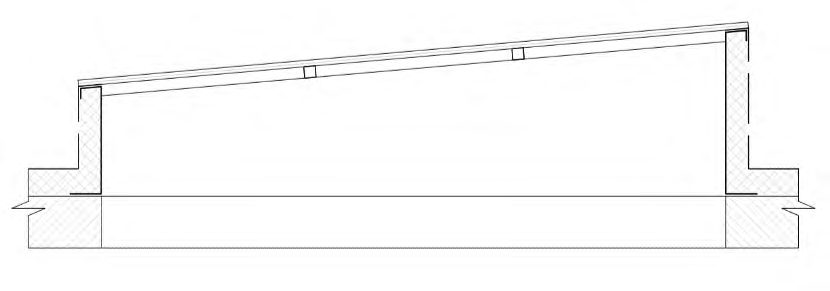
- в) трапециевидный фонарь
- г) шедовый фонарь
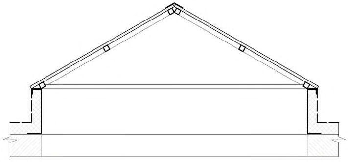
ВПриложение В. Испытания светопрозрачных покрытий и фонарей под воздействием разнонаправленных (положительных и отрицательных) нагрузок
- В.1 Метод, схема и программа проведения испытания (в соответствии с СП 70.13330) должны быть приведены в проекте, а порядок проведения - в проекте производства работ или разделе этого проекта и согласованы в установленном порядке.
- В.2 При испытании используется фрагмент светопрозрачного покрытия или фонаря, выполненный в соответствии с проектом или спецификацией производителя. При малых размерах светопрозрачного покрытия или фонаря испытанию подвергается конструкция целиком.
- В.3 Для испытания отбирают образец, не подвергавшийся ранее какимлибо воздействиям при температуре (23 ± 4) °C.
- В.4 Светопрозрачное покрытие или фонарь должны быть закреплены на несущую конструкцию в соответствии с проектом.
- В.5 Соединения между временной опорной конструкцией, основанием фонаря, элементами монтажной профильной системы и другими деталями следует выполнять в строгом соответствии с проектом и требованиями производителя.
- В.6 Вентиляционные устройства, при их наличии, должны находиться в закрытом положении во время проведения испытаний.
- В.7 Для имитации положительной или отрицательной нагрузки следует применять оборудование, использующее давление сжатого или разреженного воздуха, или грузы, обеспечивающие равномерное распределение веса по поверхности.
- В.8 Если используется пневматическое оборудование, для предотвращения утечки воздуха испытуемый образец должен быть укрыт пленкой, уплотненной по краям, со стороны избыточного давления. Средняя скорость увеличения нагрузки должна составлять 100 Па/мин ± 20 %; допускается временное прекращение увеличения нагрузки для осмотра и регистрации данных.
- В.9 Может быть использован другой равноценный метод имитации нагрузки с использованием грузов вместо давления воздуха.
- В.10 Требуемая нагрузка должна поддерживаться на достигнутом уровне в течение 6 мин.
- В.11 При использовании пневматического оборудования давление воздуха следует определять как функцию от времени и регистрировать в виде графика.
- В.12 Для создания асимметричной нагрузки следует использовать дополнительные грузы, например, мешки с песком или отдельные небольшие грузы.
Примечание - При испытании на вакуумном или компрессионном оборудовании воздействие будет направлено по нормали к поверхности покрытия, тогда как при эксплуатации эти силы будут ориентированы вертикально. Разницу следует считать незначительной и принимать во внимание только при определении коэффициента надежности.
- В.13 Схемы приложения нагрузки P для испытания светопрозрачных покрытий и фонарей под воздействием разнонаправленных (положительных и отрицательных) нагрузок приведены на рисунке В.1.
- а) Схема воздействия положительной нагрузки на плоское скатное покрытие
- б) Схема воздействия отрицательной нагрузки на плоское скатное покрытие
- в) Схема воздействия положительной нагрузки на объемное криволинейное покрытие
- г) Схема воздействия отрицательной нагрузки на объемное криволинейное покрытие
- д) Схема приложения асимметричной нагрузки к образцу покрытия
- е) Схема плана фрагмента светопрозрачного покрытия
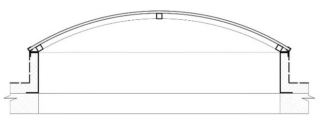
- ж) Схема воздействия положительной нагрузки на самонесущее объемное криволинейное покрытие
- и) Схема воздействия отрицательной нагрузки на самонесущее объемное криволинейное покрытие
- к) Схема плана самонесущего светопрозрачного покрытия
Рисунок В.1 - Схемы приложения нагрузки для испытания светопрозрачных покрытий и фонарей
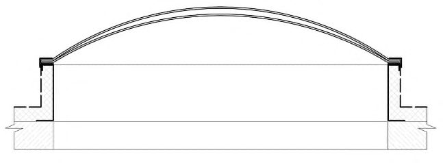
Критерием оценки работоспособности являются признаки полного или частичного разрушения и возникновения остаточных деформаций.
ГПриложение Г. Определение влияния эксплуатационных нагрузок на светопрозрачные покрытия и фонари
Г.1 Определение влияния ударных воздействий на светопрозрачные покрытия и фонари методом определения механической прочности
СП 363.132800.2017
Испытание проводится по методу, описанному в ГОСТ 30698, и позволяет оценить минимальную устойчивость светопрозрачных покрытий и фонарей к воздействию эксплуатационных нагрузок.
Метод, схема и программа проведения испытания должны быть приведены в проекте, а порядок его проведения - в проекте производства работ или разделе этого проекта и согласованы в установленном порядке.
Испытания проводят на образце светопрозрачной конструкции или фонаря размером не менее 1100 × 900 мм, сохраняющем характерные особенности конструкции.
Образец светопрозрачного покрытия или фонарь должен быть закреплен на основании, имитирующем несущую конструкцию, в соответствии с проектом. Соединения между дополнительной опорной конструкцией, основанием, элементами монтажной профильной системы и другими деталями следует выполнять в строгом соответствии с проектом и требованиями производителя.
Вентиляционные устройства, при их наличии, должны находиться в закрытом положении.
Образец подвергают воздействию ударов стального шара массой 227 г, падающего с высоты 1 м, в трех точках: в центре, в углу или на кромке и на самом уязвимом месте светопрозрачного покрытия.
Образец считают выдержавшим испытание, если он не разрушился и не деформировался.
Г.2Воздействие удара мешка с песком, имитирующего падение человека, в соответствии с методом определения класса защиты
Светопрозрачные покрытия и фонари должны выдерживать без разрушения удар мягкого тела массой 45 кг, падающего с высоты 1200 мм.
Воздействие имитирует падение тела человека на поверхность покрытия или фонарь.
Метод, схема и программа проведения испытания должны быть приведены в проекте, а порядок его проведения - в проекте производства работ или разделе этого проекта и согласованы в установленном порядке.
Испытания проводят на образце светопрозрачной конструкции или фонаря размером не менее 1100 × 900 мм, сохраняющем характерные особенности конструкции. Образец должен содержать как минимум один фрагмент заполнения наибольшего размера, определенного проектом, одно вертикальное и одно горизонтальное соединение.
Воздействие осуществляется посредством удара мягким мешком грушевидной формы, закрепленном на подвесе, согласно методу испытаний на определение класса защиты по ГОСТ 30698.
Образец закрепляют на основание, имитирующее несущую конструкцию в соответствии с проектом, и располагают таким образом, чтобы ударное воздействие имитировало наиболее вероятное направление падения человека на покрытие.
Удар проводят в наиболее уязвимое место светопрозрачного покрытия или фонаря, обычно определяемое на элементе заполнения на расстоянии 1 м от внешнего края.
Образец считают выдержавшим испытание, если после воздействия и разрушения не обнаружено его сквозного пробития.
ДПриложение Д. Метод определения водопроницаемости светопрозрачных покрытий и фонарей
Д.1 Метод определения водопроницаемости (по ГОСТ 26602.2) заключается в установлении предела водонепроницаемости испытуемого образца в условиях имитации дождевого воздействия на него определенным количеством воды при заданных стационарных перепадах давления.
Д.2 Метод, схема и программа проведения испытания должны быть приведены в проекте, а порядок его проведения - в проекте производства работ или разделе этого проекта и согласованы в установленном порядке.
Д.3 Дождевальное устройство устанавливается в горизонтальное положение.
Д.4 Образец должен быть закреплен в соответствии с проектом или технической документацией предприятия-изготовителя.
Д.5 Образец должен содержать характерные особенности конструкции, иметь как минимум одно горизонтальное и одно вертикальное соединения заполнения и быть выполнен согласно проекту или спецификации производителя.
Д.6 Для установления эксплуатационной пригодности светопрозрачных покрытий и фонарей, находящихся в рабочем положении, допускается проведение испытаний на водопроницаемость конструкций без учета перепада давления в соответствии с СП 70.13330. В этом случае продолжительность дождевания составляет 60 мин. Расход воды - 2 л/мин/м² .
Д.7 Для фонарей заводского изготовления, поставляемых производителем в комплекте, рекомендуется испытывать конструкцию целиком.
Д.8 Вентиляционные устройства, при их наличии, должны быть закрыты в течение всего времени испытания.
Д.9 Схема испытаний приведена на рисунке Д.1.
СП 363.132800.2017
Рисунок Д.1 - Схема испытаний по определению водопроницаемости светопрозрачных покрытий и фонарей
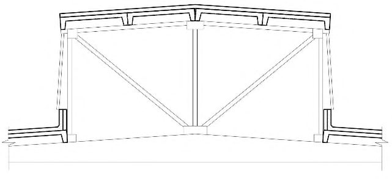
Типовые узлы светопрозрачных покрытий с заполнением
ЕПриложение Е. стеклопакетами
Указанные типовые узлы приведены на рисунке Е.1.
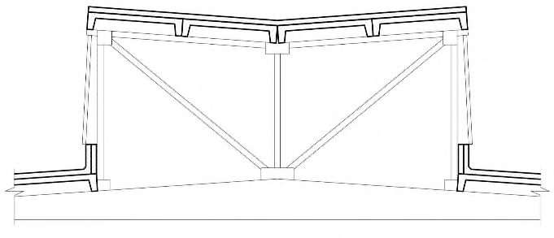
1 - стеклопакет; 2 - прижим; 3 - крышка; 4 - уплотнитель верхний; 5 - уплотнитель нижний; 6 - подставка под стеклопакет; 7 - термовставка; 8 - заглушка прижима; 9 -лента бутиловая; 10 - скоба; 11 - стойка; 12 - ригель; 13 - адаптер; 14 - прогон каркаса; 15 - пластина; 16 - вспененный полиэтилен
Рисунок Е.1 - Типовые узлы светопрозрачных покрытий с заполнением стеклопакетами
ЖПриложение Ж. Типовые узлы беспереплетного светопрозрачного покрытия с заполнением полимерными панелями
Указанные типовые узлы приведены на рисунке Ж.1.
1 - поликарбонатная панель; 2 - стойка; 3 - прижим; 4 - уплотнитель; 5 - прогон каркаса; 6 - торцевой профиль; 7 - фиксатор торцевого профиля; 8 - уплотнитель; 9 - фасонный металлический элемент; 10 - профиль с уплотнителем; 11 - дренажный желоб; 12 -ригель; 13 - термовставка
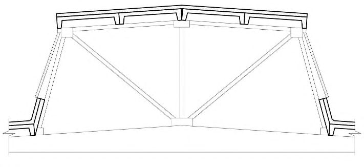
Рисунок Ж.1 - Типовые узлы беспереплетного светопрозрачного покрытия с заполнением полимерными панелями
ИПриложение И. Типовые узлы светопрозрачного покрытия с модульными полимерными панелями
Указанные типовые узлы приведены на рисунке И.1.
1 - модульная поликарбонатная панель; 2 - поликарбонатный коннектор; 3 - закладная деталь; 4 - прогон каркаса; 5 - заглушка коннектора; 6 - торцевой профиль алюминиевый упорный; 7 - торцевой профиль алюминиевый с капельником; 8 - торцевой профиль алюминиевый; 9 - уплотнитель; 10 - фасонный металлический элемент; 11 - дренажный желоб; 12 - уплотнитель
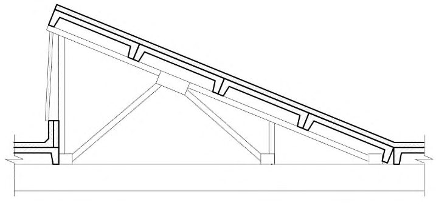
Рисунок И.1 - Типовые узлы светопрозрачного покрытия с модульными полимерными панелями
КПриложение К. Типовые узлы опирания фонаря на основание
Указанные типовые узлы приведены на рисунке К.1.
1 - поликарбонатная панель; 2 - прижимная рейка; 3 - база шарнирного элемента; 4 -шарнирный элемент; 5 - уплотнитель; 6 - кронштейн; 7 - опорный профиль; 8 -алюминиевый опорный профиль; 9 - алюминиевый прижимной профиль; 10 - фиксатор; 11 - уголок; 12 - нащельник; 13 - лента бутиловая; 14 - паронит; 15 - капельник; 16 -минераловатный уплотнитель; 17 - сэндвич-панель; 18 - лоток; 19 - пароизоляция; 20 -гидроизоляция; 21 - стеклопакет; 22 - прижим; 23 - крышка; 24 - ригель; 25 - стойка; 26 -термовставка; 27 - подставка под стеклопакет
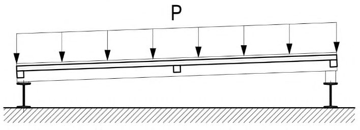
Рисунок К.1 - Типовые узлы опирания фонаря на основание
ЛПриложение Л. Схема подачи и распределения осушенного воздуха в ЭТФЭ-подушку
Указанная схема приведена на рисунке Л.1.
1 - ЭТФЭ-мембрана 100 мкм; 2 - ЭТФЭ-мембрана 250 мкм; 3 - фитинг подключения; 4 -клапан избыточного давления; 5 - фитинг прохода внешнего слоя; 6 - труба гофрированная ПВХ; 7 - труба воздухопровода ПВХ 63 × 3
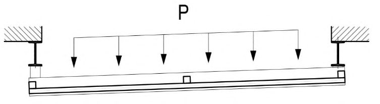
Рисунок Л.1 - Схема подачи и распределения осушенного воздуха в ЭТФЭ-подушку
МПриложение М. Типовые узлы светопрозрачного покрытия с заполнением ЭТФЭэлементами
Указанные типовые узлы приведены на рисунке М.1.
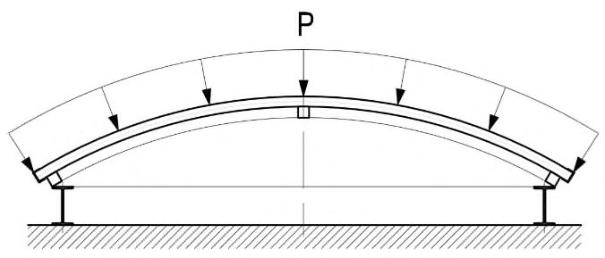
1 - несущий каркас; 2 - система подачи воздуха; 3 - система тросов; 4 - ЭТФЭ-подушка; 5 - алюминиевый профиль крепления подушки; 6 - лоток; 7 - ребро жесткости
Рисунок М.1 - Типовые узлы светопрозрачного покрытия с заполнением ЭТФЭэлементами
НПриложение Н. Значение сопротивления теплопередаче ЭТФЭ-подушек с разным количеством слоев ЭТФЭ-пленки
При определении количества слоев ЭТФЭ-пленки в ЭТФЭ-подушке для обеспечения необходимых теплотехнических характеристик, проектировщикам следует пользоваться данными, которые приведены в таблице Н.1.
Таблица Н.1
| Количество слоев ЭТФЭ-пленки | Метод испытаний | Значение сопротивления теплопередаче, м² · °C /Вт |
|---|---|---|
| 2 ряда пленки толщиной 247…255 мкм | ГОСТ 26602.1 | 0,508 |
| 3 ряда пленки толщиной 247…255 мкм | ГОСТ 26602.1 | 0,587 |
| 4 ряда пленки толщиной 247…255 мкм | ГОСТ 26602.1 | 0,666 |
ППриложение П. Реакция ЭТФЭ-подушки на воздействия внешних факторов
П.1 Подсос ветра тянет верхний слой ЭТФЭ-подушки наружу и имеет тенденцию увеличивать объем. Так как пневматическая система обеспечения не успевает закачать воздух внутрь так же быстро, внутреннее давление (относительная величина) уменьшается до нуля. Верхний слой все более устремляется вверх под действием подсоса ветра, а нижний слой полностью провисает (рисунок П.1).
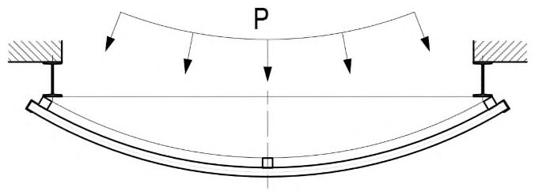
pi - внутреннее давление; Ws отрицательное ветровое давление
Рисунок П.1 - Двухслойная ЭТФЭ-подушка при подсосе ветра
П.2 Давление ветра заставляет верхний слой ЭТФЭ-подушки прогибаться внутрь до тех пор, пока не будет достигнуто равновесие давления ветра и внутреннего давления. Как только предварительное натяжение верхнего слоя будет компенсировано, внутреннее давление становится равным давлению ветра. Далее нижний слой испытывает на себе давление ветра и прогибается, а верхний слой полностью провисает (рисунок П.2).
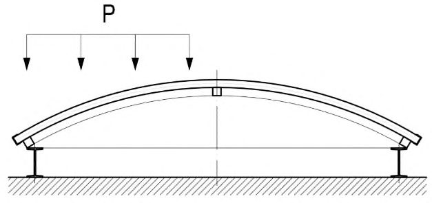
pi - внутреннее давление; Wd - положительное ветровое давление
Рисунок П.2 - Двухслойная ЭТФЭ-подушка под давлением ветра
П.3 При снеговой нагрузке ее увеличение происходит очень медленно, и воздух может выходить из подушки. В этом случае внутреннее давление необходимо отрегулировать так, чтобы оно было на одно значение выше значения снеговой нагрузки. Эта ситуация приведена на рисунке П.3. Определить величину регулируемого внутреннего давления должен инженер в зависимости от условий проектов.
Рисунок П.3 - Двухслойная подушка под снеговой нагрузкой
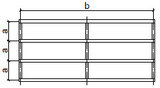
Допустимое поверхностное напряжение для однослойной ЭТФЭмембраны
Поскольку ЭТФЭ-мембрана может нагреваться под действием солнечной радиации необходимо (для предотвращения выхода ее из строя) использовать соответствующее опорное значение с учетом нагрузки и возможной повышенной температуры. Химические и физические свойства ЭТФЭмембраны не позволяют ей нагреваться выше 50 °C.
При строительстве и эксплуатации объекта в условиях высоких температур окружающей среды расчетное напряжение не должно превышать значений, указанных в таблице Р.1.
Таблица Р.1
| Температура окружающей среды, °C | Расчетное значение допустимого поверхностного напряжения, кН/м при толщине ЭТФЭ-мембраны, мкм | Расчетное значение допустимого поверхностного напряжения, кН/м при толщине ЭТФЭ-мембраны, мкм | Расчетное значение допустимого поверхностного напряжения, кН/м при толщине ЭТФЭ-мембраны, мкм | Расчетное значение допустимого поверхностного напряжения, кН/м при толщине ЭТФЭ-мембраны, мкм | Расчетное значение допустимого поверхностного напряжения, кН/м при толщине ЭТФЭ-мембраны, мкм |
|---|---|---|---|---|---|
| 100 | 150 | 200 | 250 | 300 | |
| 23 | 1,2 | 1,8 | 2,4 | 3,0 | 3,6 |
| 50 | 1,0 | 1,5 | 2,0 | 2,5 | 3,05 |
Библиография
- [1] Федеральный закон от 22 июля 2008 г. № 123-ФЗ «Технический регламент о требованиях пожарной безопасности»
- [2] СО 153-34.21.122-2003 Инструкция по устройству молниезащиты зданий, сооружений и промышленных коммуникаций
- [3] РД 34.21.122-87 «Инструкция по устройству молниезащиты зданий и сооружений»
- [4] СП 23-102-2003 Естественное освещение жилых и общественных зданий
- [5] СП 53-101-98 Изготовление и контроль качества стальных строительных конструкций